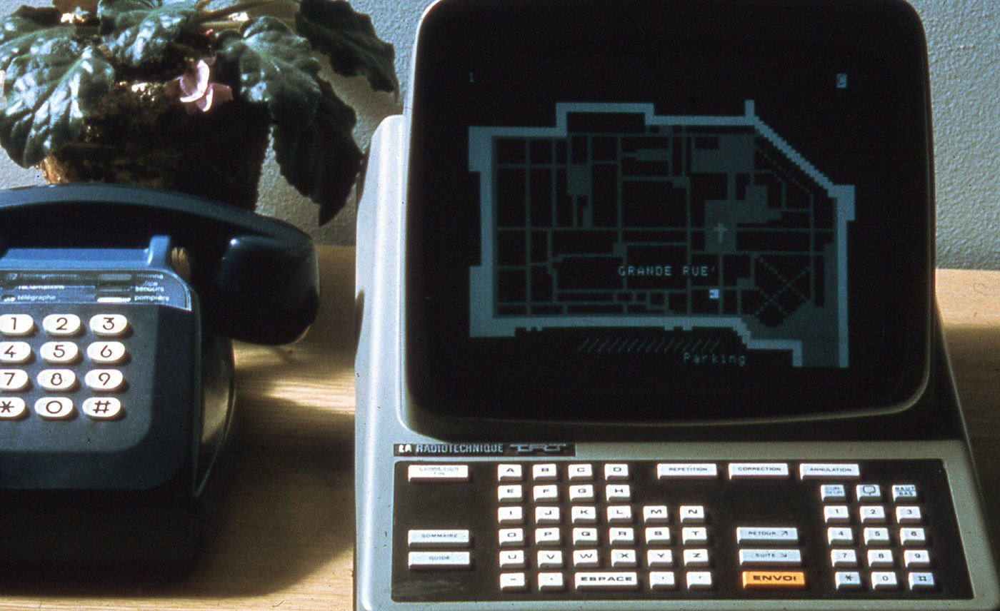

Comment des milliards de pages, reliées par des liens, s'affichent en un clic dans ton navigateur — et comment y trouver une information fiable, à l'heure où l'IA s'en mêle.
Distinguer le Web d'Internet, savoir ce qu'est un navigateur et un moteur de recherche, comprendre l'échange client-serveur (requête HTTP), décomposer une URL — et découvrir la place de la France dans cette histoire.
Tu viens de passer une séquence entière sur Internet : des câbles, des routeurs, des adresses, des protocoles. Internet, c'est le réseau — la route. Le World Wide Web, c'est ce qui circule dessus : des pages reliées entre elles par des liens hypertexte, qu'on consulte avec un navigateur. La route et les véhicules : ce n'est pas la même chose.
La preuve : beaucoup de choses circulent sur Internet sans passer par le Web. Quand tu envoies un message sur une messagerie, quand tu joues en ligne, quand ta console télécharge une mise à jour, quand tu passes un appel vidéo — Internet travaille, le Web non.
| Ça circule sur Internet et c'est le Web | Ça circule sur Internet sans être le Web |
|---|---|
| Consulter une page dans ton navigateur | Envoyer un message sur une messagerie |
| Regarder une vidéo sur un site | Jouer en ligne à plusieurs |
| Remplir un formulaire en ligne | Un appel vidéo |
| Cette page-ci, que tu es en train de lire | La mise à jour automatique de ton téléphone |
L'idée de relier des documents entre eux est plus vieille que le Web : en 1965, l'Américain Ted Nelson invente le mot hypertext — un texte dont certains mots ouvrent d'autres textes. Il faudra attendre presque vingt-cinq ans pour que quelqu'un en fasse un outil qui marche.
Ce quelqu'un, c'est Tim Berners-Lee, informaticien britannique au CERN — le laboratoire européen de physique des particules, à cheval sur la frontière franco-suisse, près de Genève. En 1989, il propose un système pour que les chercheurs du monde entier partagent leurs documents. Son patron note sur la couverture du projet : « vague, mais prometteur ». Il invente en même temps les trois piliers du Web, ceux que tu vas travailler dans ce thème : le HTML pour écrire les pages, l'URL pour donner une adresse à chaque page, et le HTTP pour les transporter.
| Quand | Quoi |
|---|---|
1965 | Ted Nelson forge le mot hypertext : l'idée d'un texte qui en ouvre d'autres |
1989 | Tim Berners-Lee propose le Web au CERN — HTML, URL, HTTP d'un seul coup |
1990 | Le premier navigateur et le premier serveur web fonctionnent |
1991 | Le premier site web est mis en ligne — du texte et des liens, rien d'autre |
1993 | Le CERN place le Web dans le domaine public : gratuit, sans brevet, pour tout le monde. Le navigateur Mosaic affiche enfin les images dans la page |
1994 | Naissance du W3C, qui écrit les règles communes du Web — et première bannière publicitaire |
1995 | JavaScript et PHP : les pages deviennent capables de réagir et de changer |
1996 | Le CSS sépare enfin le fond de la forme |
1998 | Google apparaît. Trouver une page devient un métier — les moteurs de recherche |
Et la France dans tout ça ? Elle est à côté de cette histoire, et c'est une histoire à elle seule : pendant que le Web naissait, des millions de foyers français consultaient déjà l'annuaire, la météo et leurs comptes sur un petit terminal appelé Minitel. Tu la trouveras juste après les étapes, dans l'encart 🇫🇷.
Réponds avant de lire la suite. Peu importe si tu te trompes : personne ne le saura, et tu reprendras cette même question à la fin de l'étape pour voir ce qui aura changé.
Puis chez toi, sur ton téléphone ou l'ordinateur familial : le navigateur que tu utilises tous les jours, tu peux le nommer ? Et celui qui te répond quand tu tapes une question ?
Un navigateur est un logiciel installé sur ta machine. Son travail : aller chercher une page à l'adresse que tu lui donnes, et l'afficher. Il gère aussi tes onglets, tes favoris, ton historique et tes cookies. Sans navigateur, pas de Web : c'est lui la fenêtre.
| Navigateur | Part du marché mondial | À savoir |
|---|---|---|
| Chrome (Google) | ≈ 71 % | Près de trois internautes sur quatre |
| Safari (Apple) | ≈ 15 % | Installé d'office sur iPhone, iPad et Mac |
| Edge (Microsoft) | ≈ 5 % | Installé d'office sur Windows |
| Firefox (Mozilla) | ≈ 2 % | Libre et à but non lucratif — nettement plus utilisé en France qu'ailleurs |
Source : StatCounter, tous appareils confondus, janvier 2026. Remarque utile : les trois premiers sont ceux qui sont déjà installés quand tu allumes l'appareil. Ça n'explique pas tout, mais ça explique beaucoup.
Un moteur de recherche n'est pas un logiciel installé : c'est un site web, que tu ouvres dans ton navigateur. Il a exploré le Web à l'avance et te propose les pages qui correspondent à tes mots-clés. Un métamoteur, lui, ne cherche pas par lui-même : il interroge d'autres moteurs et regroupe leurs réponses.
| Moteur | Origine | Ce qui le distingue |
|---|---|---|
| États-Unis, 1998 | ≈ 90 % des recherches dans le monde. Une situation de quasi-monopole | |
| Bing | États-Unis (Microsoft), 2009 | ≈ 5 %. Le seul concurrent occidental qui compte |
| Yandex | Russie, 1997 | Marginal dans le monde, mais majoritaire en Russie |
| Baidu | Chine, 2000 | Dominant en Chine, où Google est bloqué |
| Qwant | France, 2013 | Ne trace pas ses utilisateurs |
| Ecosia | Allemagne, 2009 | Finance des plantations d'arbres avec ses revenus publicitaires |
| DuckDuckGo | États-Unis, 2008 | Ne conserve ni ton adresse IP ni ton historique |
Parts de marché : StatCounter, mai 2026. À noter : selon la source consultée, on lit pour Google entre 87 % et 93 %. Ces chiffres sont des estimations, pas des comptages exacts — retiens l'ordre de grandeur, « environ neuf recherches sur dix », pas la décimale.
Deux pays échappent à Google, et pour des raisons opposées : en Chine, parce que l'État y bloque l'accès à Google ; en Russie, parce qu'un moteur local, Yandex, s'y est imposé avant lui. Un moteur de recherche n'est donc jamais seulement une technique : c'est aussi une affaire de frontières et de politique.
Pour répondre en une fraction de seconde, un moteur ne parcourt pas le Web au moment où tu tapes : il a construit à l'avance un index, une gigantesque table qui dit quel mot se trouve sur quelle page. Construire et tenir à jour un index coûte extrêmement cher — c'est pour ça que la plupart des « petits » moteurs n'en ont pas et louent celui d'un géant.
D'où un chiffre qui donne à réfléchir : en Europe, 96 % des recherches s'appuient sur l'index de deux entreprises américaines (Google et Microsoft), et 3,5 % de plus sur celui d'un acteur russe. En novembre 2024, le français Qwant et l'allemand Ecosia ont donc créé ensemble une entreprise, European Search Perspective, pour bâtir un index européen — nommé Staan — et cesser de dépendre des autres. Il répond déjà à une partie des recherches en français.
| Une page web | Un document qu'un navigateur sait afficher |
| Un site web | Un ensemble de pages reliées entre elles |
| Un serveur web | La machine, allumée en permanence, qui héberge le site et l'envoie quand on le demande |
| Un moteur de recherche | Un site web dont le métier est de t'aider à trouver les autres |
Même question qu'au départ. Cette fois, elle compte — et tu peux t'appuyer sur tout ce que tu viens de lire.
🎬 Regarde la vidéo, prends des notes dans le cadre à droite. Tu peux mettre en pause autant que tu veux — mais tu répondras sans revenir en arrière.
Tu tapes une adresse, tu appuies sur Entrée. En coulisses, ton navigateur envoie une requête au serveur qui héberge la page, et le serveur renvoie une réponse. Cet aller-retour obéit à un protocole : HTTP, pour HyperText Transfer Protocol — « protocole de transfert hypertexte ».
Une page ordinaire ne tient pas en un seul aller-retour : le navigateur demande d'abord le texte, y découvre des images, des polices, des feuilles de style, et redemande chacune. Ouvrir une page, c'est souvent plusieurs dizaines de requêtes en une seconde.
Une requête tient en quelques lignes de texte. La première dit quoi et comment ; les suivantes, appelées en-têtes, donnent des précisions sur le client.
| Ce qu'on lit | Ce que ça veut dire |
|---|---|
GET | La méthode : « donne-moi » cette ressource. C'est de loin la plus fréquente |
/index.html | Le chemin : quelle ressource, précisément |
HTTP/2 | La version du protocole utilisée |
Host: | Le nom du site demandé — un même serveur en héberge souvent des centaines |
Accept: | Les types de contenus que le navigateur sait afficher |
User-Agent: | Le navigateur et le système d'exploitation du client — oui, tu te présentes à chaque requête |
À côté de GET, il existe d'autres méthodes : POST pour envoyer des données (le formulaire que tu remplis), PUT pour modifier, DELETE pour supprimer. Tu n'as pas à les connaître par cœur : retiens que demander et envoyer ne sont pas la même opération.
Le serveur répond d'abord par un code de statut, un nombre à trois chiffres. Le premier chiffre suffit à savoir comment ça s'est passé.
| Code | Sens | Exemple |
|---|---|---|
2xx | Ça a marché | 200 OK — voici la page |
3xx | Redirection | La page a déménagé, va voir là-bas |
4xx | Erreur du client | 404 introuvable, 403 accès refusé |
5xx | Erreur du serveur | La machine d'en face est en panne |
HTTPS veut dire secure : c'est le même échange, mais chiffré. Sans lui, tout ce qui passe — mot de passe compris — voyage en clair et peut être lu par qui intercepte la ligne. Aujourd'hui, l'immense majorité des sites l'utilisent, et les navigateurs signalent ceux qui ne le font pas.
GET pour demander, POST pour envoyer) et un chemin ; la réponse commence par un code de statut (200 ça marche, 404 introuvable, 500 panne du serveur). HTTPS est le même protocole, chiffré.Une URL (Uniform Resource Locator, « localisateur uniforme de ressource ») est l'adresse unique d'une ressource sur le Web. Elle se lit de gauche à droite, du plus général au plus précis.
| Morceau | Ce qu'il dit |
|---|---|
https:// | Le protocole employé — ici, HTTP chiffré |
www.exemple.fr | Le nom de domaine : le site. www est un sous-domaine, .fr l'extension |
:80 | Le port, rarement écrit : le navigateur connaît la valeur par défaut |
/cours/snt | Le chemin : les dossiers à traverser sur le serveur |
/web.html | Le nom du fichier demandé |
?id=42 | Les paramètres : des précisions envoyées à la page |
#titre3 | L'ancre : un endroit précis à l'intérieur de la page |
L'extension est la fin du nom de domaine. Il en existe deux grandes familles.
| Selon l'activité | Selon le pays |
|---|---|
.com commercial | .fr France |
.org organisation | .de Allemagne |
.net réseau, usage large | .es Espagne |
.edu établissements d'enseignement américains | .ca Canada |
.gov gouvernement américain | .uk Royaume-Uni |
gouv.fr, asso.fr ou univ-poitiers.fr ne sont pas des extensions : l'extension est .fr, et gouv ou asso ne sont que des sous-domaines à l'intérieur. De même, .edu et .gov sont américaines — une université française est en .fr.Qui distribue tout ça ? Une organisation internationale, l'ICANN, coordonne le système des noms de domaine ; en France, c'est l'AFNIC qui gère le .fr — tu l'avais déjà croisée en séquence Internet, avec le DNS. Un nom de domaine ne s'achète pas une fois pour toutes : il se loue, chaque année, auprès d'un revendeur agréé.
https://www.education.gouv.fr/le-numerique/snt.html : https est le ·
.fr est l' ·
gouv n'est pas une extension mais un ·
snt.html est le nom du .
?) ou une ancre (#). Les extensions se répartissent entre activité (.com, .org) et pays (.fr, .de). Les noms de domaine se louent ; l'ICANN coordonne le système, l'AFNIC gère le .fr.Souviens-toi de la séquence Internet : le Français Louis Pouzin avait inventé le datagramme avec le réseau CYCLADES (1973), l'idée reprise par le modèle TCP/IP qui fait encore tourner Internet aujourd'hui. Mais la France a fait un autre choix, et il a donné naissance à quelque chose d'unique au monde.
Expérimenté en 1980 puis distribué gratuitement par les PTT — l'administration d'État qui gérait alors le courrier et le téléphone — le Minitel est un petit terminal à écran et clavier, branché sur la prise téléphonique. On y consulte l'annuaire électronique (le fameux « 11 »), la météo, ses comptes en banque, les résultats du bac ; on réserve un billet de train, on discute sur des messageries — en tapant 3615 suivi du nom du service. À son apogée : plusieurs millions de terminaux et plus de 25 000 services. Le réseau ferme le 30 juin 2012, après plus de trente ans.

C'est là que la comparaison devient intéressante — et c'est exactement ce qui sépare le Minitel du Web que tu es en train d'étudier.
| Minitel — réseau centralisé | Internet et le Web — réseau décentralisé |
|---|---|
| Un centre décide : les PTT valident chaque service avant sa mise en ligne | Personne n'autorise : n'importe qui peut publier une page |
| Un terminal unique, fourni, qui ne fait que ça | N'importe quel appareil raccordé au réseau |
| Si le centre tombe, tout tombe | Si un nœud tombe, les autres continuent — l'idée de Pouzin |
| Un modèle économique clair dès le premier jour (facturation à la minute) | Un modèle économique inventé après coup (publicité, données…) |
Le Minitel a donc réussi trop tôt et trop bien : la France, satisfaite de son système, a tardé à basculer vers Internet. C'est une bonne question d'histoire des techniques — peut-on avoir raison trop tôt ?
Tu as fini avant les autres ? Voici de quoi creuser (facultatif, mais valorisé).
Comprendre qu'une page est écrite en HTML (structure) et mise en forme en CSS (style), écrire soi-même du code, inspecter une vraie page — et en tirer un réflexe d'esprit critique.
Une page web n'est pas une image : c'est un fichier texte. Le serveur te l'envoie tel quel, et c'est ton navigateur qui le lit et décide de l'apparence à l'écran. La même page, vue des deux côtés :
| Ce que le développeur écrit | Ce que l'utilisateur voit |
|---|---|
<h1>Les Classes de Seconde</h1> | Un grand titre en gras |
<li>Générale</li> | Une ligne précédée d'une puce |
<a href="…">Wikipédia</a> | Un mot cliquable, souvent bleu et souligné |
<img src="chat.jpg"> | Une photo de chat |
Le HTML (HyperText Markup Language) décrit la structure : ce qui est un titre, ce qui est un paragraphe, ce qui est une image. Il fonctionne par balises, qui vont presque toujours par paire : une ouvrante <p>, une fermante </p>, et entre les deux, le contenu.
| Balise | Rôle |
|---|---|
<html> | Enveloppe toute la page |
<head> | Les informations sur la page — dont son titre d'onglet. Rien ne s'affiche dans la page elle-même |
<body> | Le corps : tout ce qui s'affiche |
<h1> … <h6> | Les titres, du plus important au plus petit |
<p> | Un paragraphe |
<ul> et <li> | Une liste, et chacun de ses éléments |
<a href="…"> | Un lien hypertexte — celui de la séance 1, enfin vu de l'intérieur |
<img src="…"> | Une image. Elle n'a pas de fermante : il n'y a rien à mettre « entre » |
Si le HTML devait aussi décrire les couleurs et les tailles, il faudrait tout réécrire à chaque page. D'où la séparation, apparue en 1996 : le CSS (Cascading Style Sheets) décrit l'apparence, dans un fichier à part.
| HTML — ce que c'est | CSS — à quoi ça ressemble |
|---|---|
<h1>Bonjour</h1> | h1 { color: red; font-size: 32px; } |
| « Ceci est un titre de niveau 1 » | « Les titres de niveau 1 sont rouges, en 32 pixels » |
Une page écrite à Poitiers s'affiche correctement à Tokyo, sur un téléphone comme sur un ordinateur, dans Chrome comme dans Firefox. Ce n'est pas un hasard : le HTML et le CSS sont des standards, des règles publiques écrites par le W3C, l'organisme fondé par Tim Berners-Lee en 1994. Tous les navigateurs s'engagent à les respecter : c'est ce qui empêche le Web de se casser en morceaux incompatibles.
<p>…</p>) ; le CSS décrit l'apparence, à part. Les deux sont des standards publics, tenus par le W3C — c'est pourquoi une même page s'affiche partout.Trois zones : HTML, CSS, et Preview — l'aperçu, qui se met à jour tout seul.
<!DOCTYPE html>
<html>
<head>
<meta charset="utf-8">
<title>Le lycée</title>
<link rel="stylesheet" href="style.css">
</head>
<body>
<h1>Les Classes de Seconde</h1>
<ul>
<li>La seconde</li>
<ul>
<li>Générale</li>
<li>Professionnelle</li>
</ul>
</ul>
</body>
</html>body {
background-color: white;
font-family: "Open Sans", sans-serif;
padding: 5px 25px;
font-size: 18px;
margin: 0;
color: #C8C8C8;
}
h1 {
font-family: "Merriweather", serif;
font-size: 32px;
}| 1 | Recopie le Doc. 1 dans la zone HTML et le Doc. 2 dans la zone CSS. Regarde l'aperçu. Capture d'écran. |
| 2 | Ajoute un titre « La Classe de Première » au même niveau que « Les Classes de Seconde ». Capture d'écran. |
| 3 | Enlève temporairement une balise <li>, puis une balise <ul>. Observe ce qui change — tu répondras à la question juste en dessous. |
| 4 | Dans le CSS : fond vert, texte jaune, police Forte pour le titre et Calibri pour le reste. Capture d'écran. Aide : pour le jaune, cherche son code hexadécimal — un code du type #RRGGBB. Tu retrouveras cette écriture en séquence photographie numérique. |
Trois captures attendues : la page recopiée, la page avec « La Classe de Première », et la page aux nouvelles couleurs.
<ul> et <li> ? Explique avec tes mots ce que tu as observé quand tu en as retiré une.<ul> (unordered list) ouvre une liste non ordonnée et décale son contenu ; <li> (list item) marque un élément, avec sa puce. Une liste imbriquée dans une autre se décale une deuxième fois — c'est ce que tu as vu avec « Générale » et « Professionnelle ».
<ol> (ordered list) : la même chose, mais numérotée.
Clic droit sur n'importe quel élément d'une page → Inspecter (ou Examiner l'élément). Une fenêtre s'ouvre : c'est le code de la page, en direct. Tu peux le modifier.
| 1 | Trouve la phrase qui mentionne le poète Paul Verlaine. Clic droit sur son nom → Inspecter. Repère la balise qui fabrique le lien : <a href="/wiki/Paul_Verlaine">. Change l'adresse pour qu'elle pointe vers /wiki/Charles_Baudelaire. Capture avec la souris posée sur le lien — l'adresse s'affiche en bas. |
| 2 | Inspecte le grand titre Arthur Rimbaud. Remplace <h1> par <h2>, puis <h3>, puis <h4>. Que se passe-t-il ? |
| 3 | Inspecte Arthur Rimbaud en gras au début du premier paragraphe. Dans quelle balise est-il ? Remplace-la par <em>. Quel effet ? |
| 4 | Dans l'inspecteur, déplie la balise <head> et remplace Arthur Rimbaud par Thomas Pesquet dans la balise <title>. Regarde l'onglet du navigateur, tout en haut. |
| 5 | Inspecte le portrait de Rimbaud. Quelle balise contient l'image ? Repère l'adresse écrite après src=. Remplace-la par celle du portrait de Thomas Pesquet (clic droit sur son portrait, « copier le lien de l'image »). Capture de la page truquée. |
La question à se poser à chaque fois : est-ce que je décris ce que c'est (HTML), ou à quoi ça ressemble (CSS) ?
<b> met en gras ; mais une règle CSS font-weight: bold aussi.
<strong>), le CSS dit comment le montrer. Retiens surtout la question de départ : ce que c'est, ou à quoi ça ressemble ?
💬 Deviens rédacteur en chef d'un jour. Ouvre le site d'un grand journal (ou une page Wikipédia), fais un clic droit sur le gros titre → Inspecter, et remplace le texte du titre par le tien : « [Ton prénom] remporte le prix Nobel de SNT ». Change aussi une image si tu veux. Fais une capture d'écran de ton scoop… puis rafraîchis la page : pouf, tout disparaît !
Comprendre comment un moteur classe les pages, exercer son esprit critique, et questionner le rôle nouveau de l'IA dans la recherche. Ce qu'est un moteur de recherche a été vu en séance 1 : ici, on ouvre le capot.
Les fondateurs de Google affirmaient qu'ils ne feraient jamais de publicité. Ils expliquaient qu'il serait trop facile d'introduire un petit facteur avantageant systématiquement les entreprises amies, sans que personne ne s'en rende compte. On voit qu'ils ont totalement changé.
Quand tu tapes trois mots et que la réponse arrive en un dixième de seconde, le moteur ne part pas explorer le Web à cet instant : ce serait impossible. Tout le gros du travail a été fait avant. Le métier d'un moteur se répartit en deux temps.
| Phase 1 — le pré-calcul, en permanence, avant toute recherche | |
|---|---|
| Exploration (crawling) | Des robots parcourent le Web en suivant les liens de page en page, et relèvent les mots qu'ils rencontrent |
| Indexation | Les pages analysées sont rangées dans l'index — la table géante qui dit quel mot se trouve sur quelle page |
| Classement de notoriété | Chaque page reçoit une note d'importance. L'algorithme historique de Google s'appelle PageRank |
| Phase 2 — la recherche, au moment où tu tapes | |
| Recherche par mots-clés | Le moteur retrouve dans l'index les pages qui contiennent tes mots |
| Tri et classement | Plusieurs algorithmes décident de l'ordre — et leur fonctionnement reste en partie secret |
Deux personnes qui tapent exactement les mêmes mots n'obtiennent pas forcément la même liste. Interviennent aussi : la langue, la position géographique, l'appareil, et pour qui est connecté, l'historique des recherches précédentes.
Et puis il y a le SEO (Search Engine Optimization, « optimisation pour les moteurs de recherche ») : l'ensemble des techniques employées par les sites pour remonter dans les résultats. C'est un métier à part entière. La conséquence te concerne directement : le premier résultat n'est pas le plus vrai, c'est le mieux classé — et une partie de ce classement a été travaillée exprès.
PageRank). Pendant : le moteur recherche dans l'index, puis trie par des algorithmes en partie secrets, influencés aussi par ta langue, ta position et ton historique. Le SEO désigne les techniques employées par les sites pour remonter. Conséquence : le premier résultat est le mieux classé, pas le plus vrai — et les résultats marqués « Annonce » sont payés.| Ta recherche | Pages trouvées |
|---|---|
divorce | ≈ 247 000 000 |
divorce garde enfant | ≈ 2 650 000 |
divorce "garde d'enfant" | ≈ 529 000 |
divorce "garde d'enfant" (France) | ≈ 162 000 |
"…" forcent l'expression exacte. Tu peux aussi filtrer par langue, pays ou date. Chercher, ça se pilote.N'importe qui peut publier n'importe quoi sur le Web : c'est sa force, et c'est le problème. Avant de te servir d'une page pour un exposé, passe-la au filtre de quatre questions. Elles ne demandent aucune compétence technique : juste de regarder.
| Question | Ce que tu regardes |
|---|---|
| Qui écrit ? | L'auteur est-il nommé ? Ses compétences sont-elles indiquées ? Peut-on le contacter ? Une page sans auteur n'est pas forcément fausse — mais personne n'en répond |
| Quand ? | Y a-t-il une date ? Le site est-il tenu à jour ? Sur un sujet qui bouge — le numérique, la santé, le droit — une page de 2015 peut être devenue fausse sans avoir changé d'un mot |
| Pourquoi ? | Le site cherche-t-il à informer, à convaincre, ou à vendre ? Y a-t-il beaucoup de publicité ? Est-elle mêlée au contenu ? |
| Comment ? | Les sources sont-elles citées, et vérifiables ? L'orthographe et le style tiennent-ils la route ? Le vocabulaire correspond-il à ton niveau et à ton sujet ? |
Et un indice matériel, gratuit : relis l'URL. Tu sais maintenant la décomposer — le nom de domaine te dit qui héberge la page. education.gouv.fr et education-gouv.info ne se ressemblent que pour qui ne regarde pas.
| Auteur | Date | Contenu |
|---|---|---|
| Est-il identifié ? Compétent ? Joignable ? | Date de mise à jour ? Site suivi ? | Sources citées ? Publicité intrusive ? |
Comprendre les traces qu'on laisse en naviguant, repérer les pièges (clickbait, arnaques) et adopter les bons réflexes — sans paranoïa, avec méthode.
| Élément | À quoi ça sert | Le revers |
|---|---|---|
Cache | Garde images/pages pour recharger plus vite | Occupe de l'espace, garde de vieilles versions |
Historique | Retrouver un site déjà visité | Trace tout ce que tu as consulté |
Cookies | Te garder connecté, mémoriser le panier | Permettent de te pister d'un site à l'autre |
Un cookie est un petit fichier qu'un site dépose dans ton navigateur pour te reconnaître à ta visite suivante. Le mot fait peur, mais tout dépend de qui le dépose.
| Cookie de session | Cookie tiers, dit « traceur » |
|---|---|
| Déposé par le site que tu visites | Déposé par quelqu'un d'autre — une régie publicitaire, souvent présente sur des milliers de sites |
| Te garde connecté, retient ta langue, ton panier | Reconstitue ton parcours d'un site à l'autre |
| Disparaît souvent en fermant le navigateur | Peut rester des mois |
| Sans lui, tu retaperais ton mot de passe à chaque page | C'est lui qui explique la pub qui « te suit » |
Choisis deux navigateurs parmi ceux installés sur le poste (Chrome, Firefox, Edge, Safari, Opera). Pour chacun : trouve par toi-même le chemin qui mène à la suppression des cookies, et note-le étape par étape. Personne ne te donnera le chemin : le savoir-faire à acquérir ici, c'est justement de trouver un réglage qu'on n'a jamais cherché.
Deux repères qui marchent presque partout : le menu est derrière une icône à trois points ou trois barres, en haut à droite ; et le mot à chercher dans les réglages est confidentialité ou vie privée. ⚠️ Ne supprime rien sur un poste partagé sans l'accord de ton professeur.
Elle fait moins que ce que son nom promet. À la fermeture de la fenêtre, elle efface ce qui est sur ta machine : historique, cookies, formulaires remplis. C'est utile quand tu empruntes un ordinateur — et c'est tout.
| Ce qu'elle cache | Ce qu'elle ne cache pas |
|---|---|
| Ton historique, sur cette machine | Ton adresse IP : les sites te voient arriver |
| Les cookies déposés pendant la session | Ce que voit le réseau du lycée ou ton fournisseur d'accès |
| Les identifiants tapés dans les formulaires | Ce que sait un site où tu t'es connecté pendant la session |
🎁 +10 POINTS BONUS offerts à toute la classe ! Clique vite, l'offre expire dans 10 secondes !!!
💥 Et voilà, tu as cliqué ! Rassure-toi : ce bouton n'a fait que changer les couleurs de la page. Rien n'a été installé, rien n'a été envoyé, on n'a rien pris de toi. Mais avoue : tu avais très envie de ce point bonus…
Ce qui t'a fait cliquer : l'urgence (« vite, 10 secondes ! »), la récompense (« un point bonus ! »), l'exagération (« !!! »). Ce sont exactement les ressorts d'un vrai piège.
Concrètement, pour toi, un vrai piège pourrait : installer un programme espion, voler le mot de passe de ton compte Insta ou Snap, publier à ta place, vider le forfait de tes parents, ou récupérer tes photos.
Et plus tard, adulte : les mêmes techniques servent à vider un compte en banque (faux mail de la banque), piéger une entreprise (fausse facture, « arnaque au président »), ou bloquer tout un hôpital contre une rançon. La règle, à tout âge : plus c'est urgent et trop beau, plus on ralentit et on vérifie.
🕵️ Espionne… toi-même. Sur n'importe quel site, ouvre l'inspecteur → onglet Application (ou Stockage) → Cookies. Regarde combien de cookies un seul site dépose sur ta machine. Surprenant, non ?
Sans écran : prolonger la frise commencée en séquence Internet avec les repères propres au Web — et découvrir que toutes les dates ne se valent pas.
Vous recevez vingt étiquettes, sans leurs dates. En binôme, et sans écran : cherchez les dates, placez les étiquettes sur la frise, puis justifiez deux placements de votre choix à l'oral.
Deux étiquettes n'ont rien à voir avec l'informatique. Elles sont là exprès : elles servent de repères — pour sentir à quelle époque tout cela se passe vraiment.
| Série 1 — Internet (déjà vue au thème précédent) | Série 2 — le Web |
|---|---|
| Première utilisation d'un modem | Ted Nelson invente le mot « hypertexte » |
| Le réseau ARPANET | Tim Berners-Lee propose le Web au CERN |
| Le protocole TCP | Le CERN met le Web dans le domaine public |
| Création de la CNIL | Le navigateur Mosaic affiche les images |
| Adoption du mot « Internet » | Première bannière publicitaire |
| Napster | Yahoo! |
| JavaScript et PHP | |
| Le premier iPhone | Le CSS |
| Les premiers pas sur la Lune (repère) | Le premier ordinateur portable (repère) |